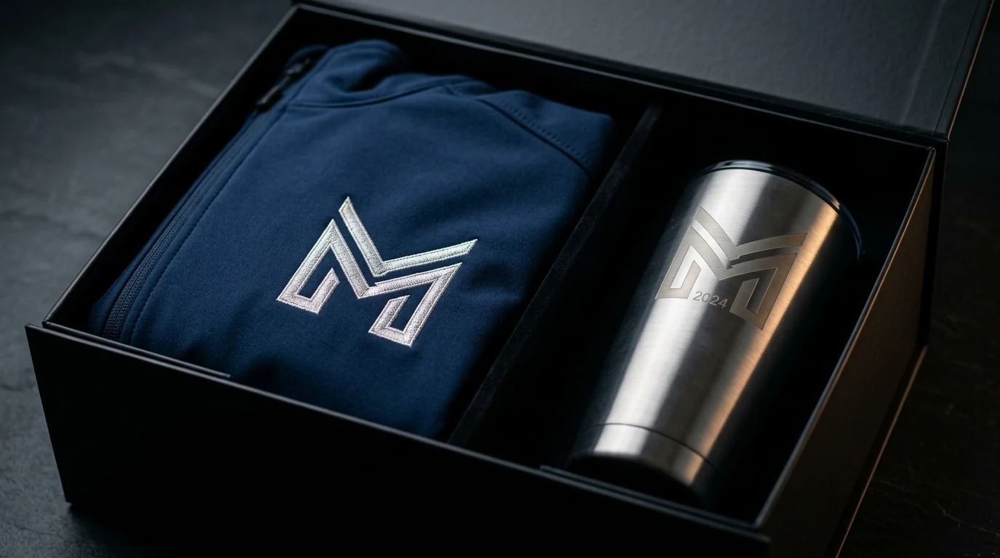

Souvenir untuk Seminar dan Workshop Kantor
Souvenir untuk seminar dan workshop biasanya berupa goodie bag yang berisi beberapa produk sekaligus agar peserta mendapatkan paket yang lengkap.
- Tote bag atau tas kanvas sebagai wadah goodie bag
- Notebook dan pulpen custom logo
- Tumbler atau botol minum sederhana
- Lanyard dan ID card peserta
"Kombinasi produk ini dipilih karena praktis dibawa peserta dan tetap menampilkan identitas brand penyelenggara secara konsisten."
— Erlang Sinatrya, Penulis Merchandise Kantor

Souvenir untuk Acara Outdoor dan Lapangan
Souvenir untuk acara outdoor dipilih berdasarkan fungsi praktis yang mendukung aktivitas di luar ruangan.
- Payung lipat custom logo perusahaan
- Topi atau bucket hat branding
- Tas ransel untuk kebutuhan mobilitas
- Botol minum tahan banting untuk aktivitas lapangan
Produk kategori ini umumnya dipilih untuk acara seperti CSR, outbound, atau kegiatan komunitas yang diselenggarakan perusahaan.
Souvenir untuk Gathering dan Acara Tahunan Perusahaan
Souvenir untuk gathering tahunan biasanya dipilih dengan tingkat presentasi lebih tinggi karena acara ini sering menjadi momen apresiasi kepada seluruh karyawan.
- Jaket atau kaos tahunan dengan desain khusus edisi acara
- Hampers berisi snack dan merchandise custom
- Tumbler atau mug edisi terbatas
- Photo frame atau plakat kenang-kenangan acara
Souvenir jenis ini biasanya diproduksi dalam desain khusus yang berbeda dari merchandise harian kantor.
Souvenir untuk Acara Formal dan Rapat Eksternal
Souvenir untuk acara formal seperti rapat dengan klien atau mitra bisnis biasanya dipilih dengan tampilan lebih elegan dan minim elemen bermain warna.
- Notebook kulit sintetis dengan cetak logo timbul
- Pulpen premium dengan gravir nama perusahaan
- Tumbler stainless dengan warna netral
- Card holder atau dompet kartu custom
Produk pada kategori ini biasanya dikemas dalam box khusus untuk menambah kesan profesional saat diberikan langsung kepada tamu.

Siapkan Souvenir Event Kantor Bersama Kami
Sedang menyiapkan souvenir untuk seminar, gathering, atau acara tahunan perusahaan? Merchandise Kantor siap membantu menyediakan souvenir event kantor custom logo sesuai skala dan tema acara Anda. Hubungi kami sekarang untuk konsultasi paket dan penawaran harga.